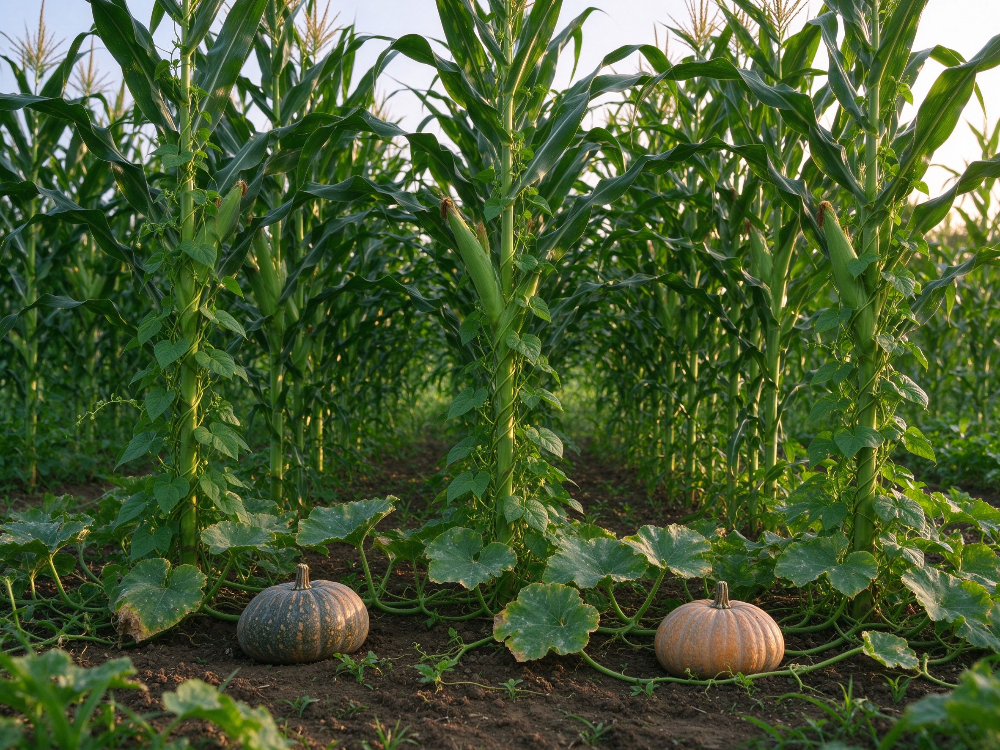

The Three Sisters: Corn, Beans, and Squash Grown Together the Indigenous Way
Long before modern raised beds and companion-planting charts, Indigenous gardeners across the Americas perfected one of the most elegant food systems ever devised: the Three Sisters. Corn, beans, and squash grow together as a team — corn as the climbing pole, beans as the nitrogen factory, squash as the living mulch. It's a productive, soil-building, and deeply satisfying way to grow, and it translates beautifully to a backyard today.
How the Trio Works
Each sister does a job the others can't:
- Corn (the elder sister) grows tall and gives the beans something to climb — a natural, free trellis.
- Beans (the middle sister) fix nitrogen from the air into the soil, feeding the corn and squash as they grow. In return, they get support.
- Squash (the younger sister) sprawls across the ground with big leaves that shade out weeds, hold moisture in the soil, and their prickly stems deter pests.
It's companion planting in its truest form — see our companion planting guide for the broader principles this system is built on.
What to Plant
- Corn — a tall, sturdy variety that can hold bean vines: flint, dent, or sweet corn. Pole-bean-friendly corn is key.
- Beans — pole beans (climbing), ideally a snap bean you'll eat fresh or dry. Runner beans work too.
- Squash — winter squash like pumpkin, butternut, or acorn sprawls the most and covers ground best. Bush summer squash works in smaller spaces.
Planting the Three Sisters
1. Build the mound
In late spring after frost, mound the soil into a raised hill about 30 cm (12 in) tall and 60-90 cm (2-3 ft) wide. Space the hills 1.2-1.8 m (4-6 ft) apart so the squash has room to roam. This raised mound improves drainage and warms the soil early.
2. Plant corn first
Sow 5-6 corn seeds in a circle on the mound, about a hand's width apart. When the seedlings are about 15 cm (6 in) tall, thin to the 3-4 strongest. The corn is your trellis, so it goes in first and gets a head start.
3. Add beans once corn is established
When the corn is about 20-25 cm (8-10 in) tall, plant the beans around the base of each corn stalk — 4-6 beans per mound. This timing matters: beans started too early will smother small corn. Let the beans climb the corn as it grows.
4. Sow squash around the edges
Plant 2-3 squash seeds around the outer edge of the mound, thinning to the strongest. As the squash vines spread, they carpet the ground and lock the system together.
Care Through the Season
- Water at the roots — keep the mound evenly moist, especially while corn establishes; squash leaves stay dry to resist mildew.
- Feed lightly — the beans make their own nitrogen, so skip heavy fertilizing; a little compost at planting is enough. See our composting guide.
- Let the squash work — don't over-weed; the squash is your living mulch doing that job for you.
Harvesting and Using All Three
Pick corn when the silk turns brown and the kernels are milky. Snap beans come continuously through the season. Squash — winter varieties — cures on the vine until the rind is hard, then stores for months. It's a complete harvest: a starch (corn), a protein (beans), and a storage vegetable (squash) from one bed. For more on extending and enriching your soil and beds, see our soil guide and raised bed guide.
If you garden in a small space, the same stacking logic works on a smaller scale — corn in a big container with beans at its base and a compact squash below. Start with one mound and let the three sisters show you what teamwork can grow.